Control Surface Overview
The LIVE control surface is made up of three Fader Tiles, one Control Tile, and one Master Tile. Some of these tiles are optional.
The Main Screen is a multi-touch display used to access audio parameters and setup functions.
Fader Tiles are the primary physical interface for manipulating audio. A single 12-fader tile can address up to 360 unique faders through a series of control layers and banks (see Layer Manager section). Faders can control mono, stereo, LCR, 4.0 or 5.1 audio paths.
Quick Controls at the top of each Fader Tile provide access to most path parameters (gain, processing, pan, Auxes, bus assignment, VCA assignment, etc.) Think of these controls as a full analogue channel strip, yet ergonomically condensed within layers of soft keys.
The Control Tile (L300, L350, L500, L500 Plus, L550, L650 only) provides an alternative way of accessing these same path parameters. It is also a multi-touch display. This allows you to work how you prefer; on the touchscreen, Quick Controls, and/or a combination with the Control Tile.
The Tablet Tile (L100, L200, L450 only) provides an area to place a tablet running SSL's TaCo Tablet Control app. The Tablet Tile features an iJack stereo input (L100, L200 only) and USB charging port. For more information on TaCo please see TaCo: Tablet Control.
The Master Tile is used for automation, Masters, Solo, and Talkback.
Click below to see each console control surface:
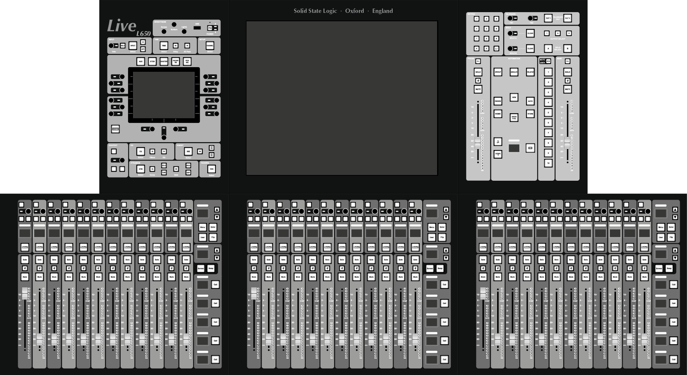
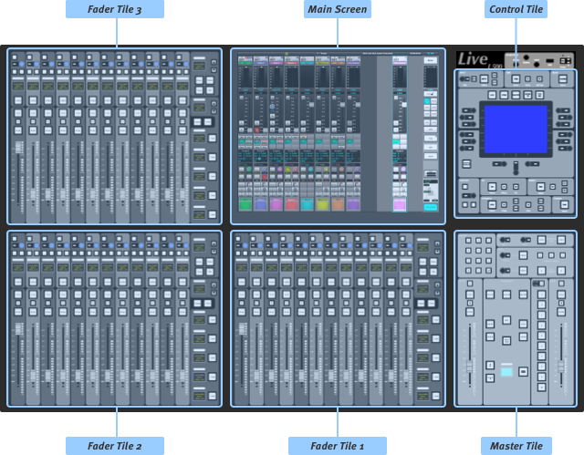
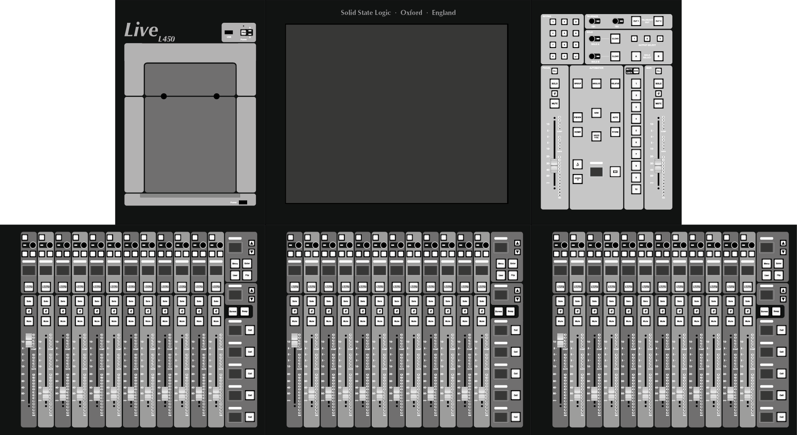
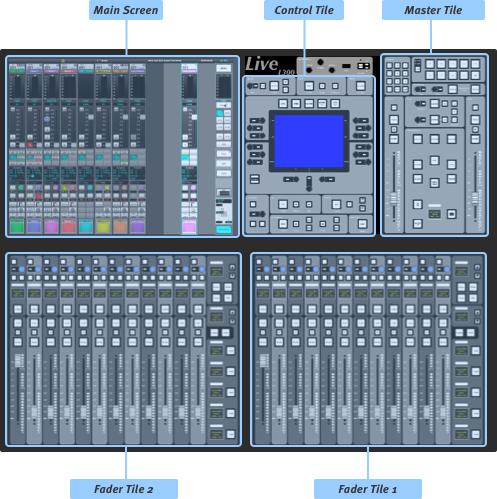
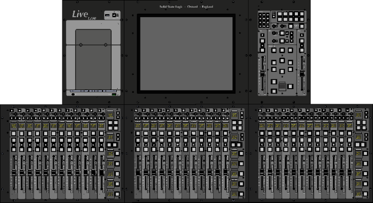
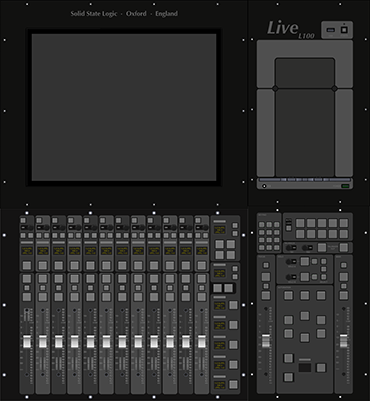

Note that L100, L200, L350 and L550 consoles can have a 'Plus' Processing Pack enabled. This enhances their processing capacity but does not otherwise alter their functionality. Any references to these models include both the Plussed and non-Plussed versions unless otherwise stated. Refer to the Plus Pack section for further details.
Power
To turn the console on, ensure the one/two power supply switches on the rear of the console are on and then press the PSU button in the top of the Channel Control or Tablet Tile (on rear of surface for Remote Expander). The PSU button colour indicates the console power state:
- Off - AC mains is not connected or not switched on.
- Backlit white - AC is present, ready for power up.
- Cyan - Console is switched on.
The main (A) and backup (B) power supply states are indicated by the LEDs adjacent to the PSU button (not applicable to L100):
- Green - on and functioning correctly.
- Green flashing - on, but power has been interrupted within the previous 20 seconds.
- Red flashing - off or there is a fault.
Note: The console can run on a single power supply if necessary. Changeover from one to another is seamless.
To power off, go to the System page (MENU > Setup > System / Power > System tab). Press & hold the red Power Off Console button.
The console software is designed to be resilient to any errors that occur and recover gracefully. However, a reset switch is located in the small hole above the PSU button in the event that you need to restart only the front panel control surface while continuing to pass audio. Individual processes can also be restarted within the System page, e.g. if the Fader Tiles are not responding but the main screen is still responsive.
Brightness Controls
Near the power button on the Control Tile (where fitted) are three brightness encoders for the touchscreens, buttons, and top-trim lights:
- Turn to change the brightness.
- Press to recall the stored brightness value.
- Press & hold to store the current value for later recall.
These controls are also available in the Console Options tab (MENU > Setup > Options > CONSOLE).
These settings are stored in the showfile and can also be automated.
Status Bar
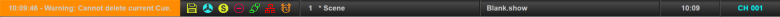
The top of the main screen features a status bar that shows useful information during use. Messages will appear in the left of the status bar. Information messages appear in white, warning messages in orange (as pictured) and error messages in red. Double tap the message area to open a message history window. Show critical messages will appear in purple and remain in the status bar until tapped to confirm acknowledgement. The remaining status bar sections are described below:
| Icons indicating showfile saved state, Rehearse Mode state, Solo In Place state, Compatibility Mode/Plus Pack state, remote surface connection status, IP Address Clash Warning and Clock Source Warning. | |
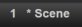 |
Selected Automation Scene name and number. The * indicates unsaved changes. |
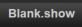 |
Current Showfile name. |
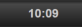 |
Current time or timecode value (tap to toggle). |
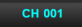 |
Currently Selected path. |